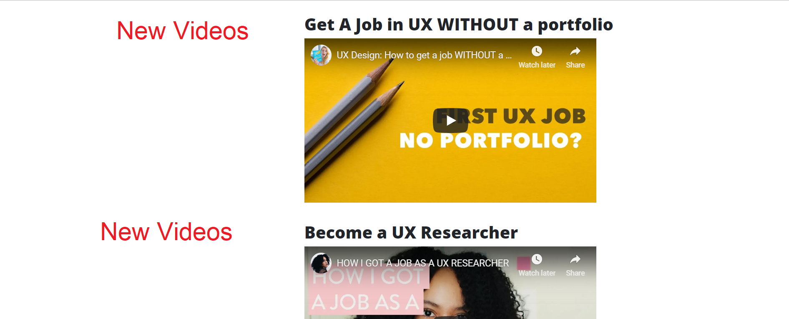

What attracts users to your website? A/B Testing provides an opportunity for anyone who owns a website to identify which aspects of a company’s website attracts users, new clients, and can be the potential factor to make effective changes to increase sales. Google analytics provides website owners with an opportunity to identify, marketing strategies, promotions, and evaluate new content for impact with the use of A/B testing.
A/B Testing is one of the optimization features in Google analytics. An A/B tests is an experiment in which a website owner can modify website elements to test if the modification attracts new clients, reduces bounce rates, or evaluate other aspects of user behavior.
Testing Methods
The previous goal was an Event goal, specifically a media event. The previous post used four videos ranging on topics from usability testing presented by Google, Usability testing and research video from the Steve Krugs don’t make me think and A humorous UX video from Kantega. The previous media selections didn’t increase goal conversions. I made a small change to the index page for the A/B test by changing two of the videos. I removed the Steve Krug Videos and replaced them with a video on how to get hire without a portfolio, how to become a UX researcher and How to land a job in UX.
 Image frmo User Experience JournalA/B Test Result
The A/B test changes didn’t produce new results in reaching the event goal. Inn effort to maintain continuity while con ducting the test I used the same strategies used when posting the initial media content.
when reviewing the results, I thought about the change in videos, best practice, and implementation to produce stronger results for future testing. In the previous post I referenced an article by from UXplanet.com. The article discussed best practices for media use on the web. On component of engaging audience n media is the overall page content and reducing the amount of written content on the page. I reduced the amount of introduction text on the index page from two paragraphs to one paragraph. Selecting shorter videos, selecting broader audience for data collection and varied media content might produce stronger outcomes.
Image frmo User Experience Journal
 Image for A/B test content reduction
Image for A/B test content reduction